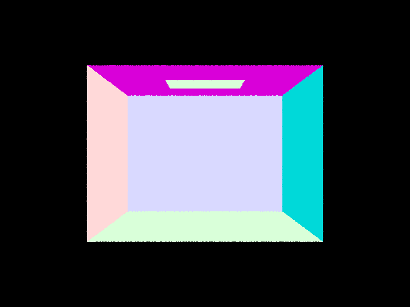

CS184/284A Spring 2025 Homework 3 Write-Up
Names: Keagan Chern, Ice Unjitwattana
Link to webpage:https://cal-cs184-student.github.io/hw-webpages-supa-webpage/hw3/index.html
Link to GitHub repository:https://github.com/cal-cs184-student/sp25-hw3-icicle

Overview
We beginning our journey with ray generation and primitive intersection. We focused on the intersection with triangles and spheres. After doing this, we recognize that it would be too slow to render any models. We then implemented a BVH structure to speed up the rendering process. We then moved onto direct illumination where we implemented both hemisphere sampling and importance sampling. After implementing direct illumination, we moved onto global illumination that now considers indirect lighting and the bouncing of light after first contact. Lastly, we implemented adaptive sampling to reduce the noise in our images and add efficiency to our rendering process. We definitely learned a lot about the rendering process and see how the theory taught in class can be done in practice.Part 1: Ray Generation and Scene Intersection
-
Walk through the ray generation and primitive intersection parts of the rendering pipeline.
- Ray generation:
We first convert the pixel index into coordinates on the camera sensor. Based on the camera coordinate, we generate the ray from (0, 0) to that coordinate. We then convert that from camera coordinates to world coordinates by applying the rotation matrix and adjust its origin position. - Primitive Intersection:
We primarily did intersections for the primitives spheres and triangles. For the triangle intersection, we implemented the Möller-Trumbore algorithm which is explained below. For the sphere we essentially solve a quadratic equation to find the time t in which the ray hits the object. There may be 2 interesections, t1 and t2. We then check to see if t is in our ray's range t_min and t_max. If t is less than t_min, the intersection is "behind" the camera sensor so we cannot see it and it doesn't count. If t is greater than t_max, there is an object that's blocking that ray so we don't count that either. For the sphere, we will use the closer intersection that fits the aforementioned condition.
- Ray generation:
-
Explain the triangle intersection algorithm you implemented in your own words.
We implemented the Möller-Trumbore algorithm as described in the lecure slide. The algorithm allow us to efficiently solve for the time of intersection, t, as well as the barycentric coordinates which is useful for finding the normal of the intersection point later on.
We first start by defining 2 edges of the triangle E1 and E2 as well as define a vector S which is a ray from the origin to one of the triangle vertices.
We then calculate the determinant using cross products by calculating S1 = D x E2 and S2 = S x E1 where D is the direction of the ray. The determinant is S1 \(dot\) E1.
Lastly, we plug it all into the final vector equation which gives us t, b1, and b2. -
Show images with normal shading for a few small .dae files.
dae/keenan/banana.dae  dae/sky/CBempty.dae 
dae/sky/CBgems.dae 
dae/sky/CBspheres_lambertian.dae
Part 2: Bounding Volume Hierarchy
-
Walk through your BVH construction algorithm. Explain the heuristic you chose for picking the splitting point.
We start by finding the number of elements between the start and the end of the iterator.
If the number of elements fit inside max_leaf_size, we can construct a leaf node, put all the Primitives in and be done.
Otherwise, we have to split the Primitives into 2 sets and recursively construct left and right BVH nodes. To split, we first find the split axis. Our current heuristic is to choose the longest axis. We then sort our primitives based on their centroid position in that axis. We then split the sorted primitives into two groups in the middle.
-
Show images with normal shading for a few large .dae files that you can only render with BVH acceleration.
dae/sky/bunny.dae dae/meshedit/maxplanck.dae dae/sky/CBlucy.dae 
dae/meshedit/cow.dae -
Compare rendering times on a few scenes with moderately complex geometries with and without BVH acceleration. Present your results in a one-paragraph analysis.
In theory, the BVH acceleration improves run time logarithmicly since we can prune the tree and traverse its depth in logarithmic time. This speed up is reflected in our results.
Without the acceleration, cow: 3.9513, blucy: 215.1822s, planck: 112.6359s, bunny: 13.8861
With the acceleration, cow: 0.0437, blucy: 0.0458, planck: 0.05065, bunny: 0.0401
The speed boost is on the scale of 100x. On even larger and more complex renderings, the difference will be even more significant. As we see with blucy and plank, with the optimization, it was a minimal change in time compared to that of bunny, but without the optimization it was a extremely large difference.
Part 3: Direct Illumination
-
Walk through both implementations of the direct lighting function.
Hemisphere Sampling
- Given an intersection point, we sample a random outgoing vector from the hemisphere (converted to world coordinate)
- Check if that outgoing ray intersects with a light source. If it does, we apply the illumance to calculate how bright the reflection is (multiply illuminance by the bsdf function, cosine of the angle, and 2pi).
- Repeat this numsample times and calculate the average reflection illuminance. Here, num sample is calculated by mulitplying the number of lights in the scene by the number of samples per light source which is set by the -l flag.
Importance Sampling- Given an intersection point, we sample specifically in directions of lights that exist in the scene.
- Check if that outgoing ray intersects with another object before it hits our light source. If it does, the object is blocking the light source, so the light source cannot contribute to the direct illumination of the object. If it doesn't, the light source does contribute to the direct illumination of the object. We then plug it into a similar equation to hemisphere sampling (instead of multiplying by 2pi from the hemisphere distribution, we divide by the pdf of the light source sampling instead)
- Repeat this ns_area_light times for each light source and calculate the average reflection illuminance. If it is a point light source, we only sample once per light source as an optimization to avoid redundancy.
-
Show some images rendered with both implementations of the direct lighting function.
dae/sky/CBbunny.dae with Hemisphere sampling, l = 32, s = 64 dae/sky/CBbunny.dae with Importance sampling, l = 32, s = 64 dae/sky/CBspheres_lambertian.dae with Hemisphere sampling, l = 32, s = 64 dae/sky/CBspheres_lambertian.dae with Importance sampling, l = 32, s = 64
-
Focus on one particular scene with at least one area light and compare the noise levels in soft shadows when rendering with 1, 4, 16, and 64 light rays (the -l flag) and with 1 sample per pixel (the -s flag) using light sampling, not uniform hemisphere sampling.

dae/sky/CBbunny.dae with Hemisphere sampling, l = 1, s = 1 dae/sky/CBbunny.dae with Importance sampling, l = 4, s = 1 dae/sky/CBbunny.dae with Hemisphere sampling, l = 16, s = 1 dae/sky/CBbunny.dae with Importance sampling, l = 64, s = 1
As we can see in the above photos, increasing l or number of samples per area light leads to a less noisy and more accurate image of the bunny. This is due to the lower variance in the Monte Carlo estimator as the number of samples increase. We also see there is softer shadows and edges comparing l = 1 to l = 64. Lastly, there is definitely a trade off as have more samples increases the rendering time. The first and the last image have a significant difference in the quality of the image, but the l = 64 image is very similar to l = 16. This is a bit of a diminishing return. -
Compare the results between uniform hemisphere sampling and lighting sampling in a one-paragraph analysis.
Hemisphere sampling samples evenly and uniformly over the hemisphere while importance lighting sampling contributes samples in regions that are more important to direct illumnation, such as the direction of the light source of the ceiling of the Cornell Box that decreases variance. As a result we see that the hemisphere sampling has more noise and graining photo shown above with the bunny scene and the ball scene compared to that of lighting sampling. Also, there are less samples need for the lighting sampling compared to that of the hemisphere sampling to get a similar quality image.
Part 4: Global Illumination
-
Walk through your implementation of the indirect lighting function.
Below, we will discuss how we implemented the accumulated indirect lighting function first (at least one bounce radiance with is AccumBounce set to true, and no russian roulette). Then we will discuss the minor logic required to handle the case where AccumBounce is set to false.- Given a ray and an intersection point, we first check if the ray's depth is equal to 1. If so, we immediately return one bounce radiance of that intersection. This also acts as the base case for our recursive call which we will discuss later on.
- Otherwise, we sample a new incoming ray (with -1 depth from the current ray) based on the object's bsdf at the intersection point and find an intersection for this new ray.
- We then recursively call the at least one bounce radiance function on the new ray and new intersection to get the illuminance from subsequent depths. After returning from the recursive call, we add up the result of that with the direct illumination of the current intersection and the current ray (that was passed into the function) and return the sum.
To support russian roulette termination, we only make the recurive call based 7 out of 10 times (p = 0.7). This is implemented with the help of the coin flip function and a random if statement. We also had to adjust our reflection formula to account for this new distribution. Instead of just dividing by the pdf, we had to divide the reflected illumination by both the pdf and the probability of it not terminating (in our case, 0.7). -
Show some images rendered with global (direct and indirect) illumination. Use 1024 samples per pixel.
dae/sky/CBspheres_lambertian.dae with global illumination dae/sky/CBbunny.dae with global illumination
-
Pick one scene and compare rendered views first with only direct illumination, then only indirect illumination. Use 1024 samples per pixel. (You will have to edit PathTracer::at_least_one_bounce_radiance(...) in your code to generate these views.)
dae/sky/CBbunny.dae with only direct illumination dae/sky/CBbunny.dae with only indirect illumination
On the left we see a photo of the bunny scene with only direct illumination which is what was implemented in part 3. This is the light that hits directly from the light. On the right we see the indirect illumination which can be seen as the light that bounces off the walls and other objects in the scene. SInce it is bounces beyond the first bounce, it is seen to be much lighter in color.
-
For CBbunny.dae, render the mth bounce of light with max_ray_depth set to 0, 1, 2, 3, 4, and 5 (the -m flag), and isAccumBounces=false. Explain in your write-up what you see for the 2nd and 3rd bounce of light, and how it contributes to the quality of the rendered image compared to rasterization.
Compare rendered views of accumulated and unaccumulated bounces for CBbunny.dae with max_ray_depth set to 0, 1, 2, 3, 4, and 5 (the -m flag). Use 1024 samples per pixel.
CBbunny.dae with isAccumBounces=false.
CBbunny.dae with max_ray_depth set to 0 CBbunny.dae with max_ray_depth set to 1 CBbunny.dae with max_ray_depth set to 2 CBbunny.dae with max_ray_depth set to 3 CBbunny.dae with max_ray_depth set to 4 CBbunny.dae with max_ray_depth set to 5
CBbunny.dae with isAccumBounces=true
CBbunny.dae with max_ray_depth set to 0 CBbunny.dae with max_ray_depth set to 1 CBbunny.dae with max_ray_depth set to 2 CBbunny.dae with max_ray_depth set to 3 CBbunny.dae with max_ray_depth set to 4 CBbunny.dae with max_ray_depth set to 5
First, looking at the 2nd and 3rd bounce of light, we see that the image is obviously not as bright as the 1st bounce or direct bounce of light. We see the 2nd bounce in the photo above give off an ambient glow that gives light to places in the shadow such as that of the ceiling which is not present in the first bounce. The 3rd bounce of light is even dimmer than the 2nd bounce and refines the effect provided in the 2nd bounce by making the light fill the shadows. Overall, the 2nd and 3rd bounce of light contribute to the quality of the rendered image by providing a more realistic and natural lighting effect that is not present in rasterization.
When comparing the accumulated and unaccumulated bounce for the CBbunny, we recognize that the accumulated bounce adds the contribution of all bounces up to a set depth while unaccumlated is the contribution for that specific set depth. This means that accumulated provides a more realistic and natural lighting effect while unaccumulated is meant to provide and highlight what the light looks like at a specific bounce depth. Also, by definition, this means that m = 0 is going to be the same for both accumulated and not accumulated. We also see that for depth = 1, the accumulated is the same as unaccumlated except the light on the ceiling. -
For CBbunny.dae, output the Russian Roulette rendering with max_ray_depth set to 0, 1, 2, 3, 4, and 100(the -m flag). Use 1024 samples per pixel.
CBbunny.dae with Russian RouletteCBbunny.dae with max_ray_depth set to 0 CBbunny.dae with max_ray_depth set to 1 CBbunny.dae with max_ray_depth set to 2 CBbunny.dae with max_ray_depth set to 3 CBbunny.dae with max_ray_depth set to 4 CBbunny.dae with max_ray_depth set to 100
-
Pick one scene and compare rendered views with various sample-per-pixel rates, including at least 1, 2, 4, 8, 16, 64, and 1024. Use 4 light rays.
CBbunny.dae with various sample-per-pixel rates, max depth = 5, and 4 light raysCBbunny.dae with 1 sample-per-pixel CBbunny.dae with 2 sample-per-pixel CBbunny.dae with 4 sample-per-pixel CBbunny.dae with 8 sample-per-pixel CBbunny.dae with 16 sample-per-pixel CBbunny.dae with 64 sample-per-pixel CBbunny.dae with 1024 sample-per-pixel
Comparing the different sample-per-pixel rates, we see that the image quality as the number of sample-per-pixel increases gets much and much better. With only 1 sample-per-pixel, the image is very noisy and grainy as each pixel is determined by a single light ray. This leads to an image that has basically no structure. As the sample-per-pixel increases, the image becomes more and more clear and the noise decreases, since with more samples it gives more accurate lighting details. At 1024 sample-per-pixel, we see that there is very minimal noise.
Part 5: Adaptive Sampling
-
Explain adaptive sampling. Walk through your implementation of the adaptive sampling.
-
These are the changes that we made to raytrace pixel to enable adaptive sampling.
- We added 3 variables to keep track of the sum of illuminance, the sum of illuminance squared, and the number of samples we've taken so far
- We still use the same loop where we sample ns_aa times, though we may now exit the loop early if some conditions are met (described below)
- After we recieve the radiance from est_radiance_global_illumination, we calculate the illumination and update the 3 new variables accordingly.
- We then check if the sample we've just taken is divisble by samplesPerBatch. If so, we plug our sum of illuminance and sum of illuminance squared that we've accumulated so far into the formula given in the spec to calculate I. If I is less than or equal to the maxTolerance times mu, we exit the loop.
- After the loop, we still do everything we did before except when calculating the average radiance, we now divide by the number of samples we've taken so far instead of ns_aa since the loop mightve terminated early.
-
Pick two scenes and render them with at least 2048 samples per pixel. Show a good sampling rate image with clearly visible differences in sampling rate over various regions and pixels. Include both your sample rate image, which shows your how your adaptive sampling changes depending on which part of the image you are rendering, and your noise-free rendered result. Use 1 sample per light and at least 5 for max ray depth.

CBspheres_lambertian.dae with adaptive sampling CBspheres_lambertian.dae sample rate image CBbunny.dae with adaptive sampling CBbunny.dae with sample rate image
(Optional) Part 6: Extra Credit Opportunities
N/A -
Explain adaptive sampling. Walk through your implementation of the adaptive sampling.